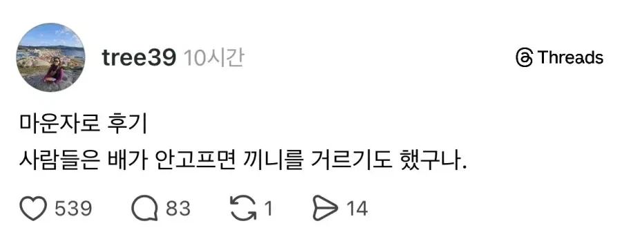

비만환자들이 마운자로 맞고 나서 느낀점 한가지 ㅋㅋㅋ
댓글
콜레스트롤은 그대로던데 ㅜ ㅜ주륵
콜레스테롤은 원래 개인 고정값임
비도 고지혈증임
그래 그래 이젠 스시자로 맞으면서 건강하게살거라
나도 5개월찬데 혈압 콜레스테롤 간수치 다 정상화됨. 식단 빡세게 하긴 했음
밥먹기 귀찮은데 먹어야하나.. ??
지금 안먹으면 이따가 배고플까봐 먹음
나도 그런데 완전히 거르면 자기 전에 배고플 거 같기도 하고
그래도 단백질은 필요할테니 두부 하나 먹고 떼움
이걸 제외하면 하루에 한끼 먹는 때가 많은 듯
덴마생각나네
"사람들은 배고프지도 않는데도 먹어 그거야 말로 가장 큰 물리적 오류 아닌가?"
"아무리 퀑이 날고긴다고 해도 결국 일반인보다는 안되는거야"
비만인 치고 다이어트 안해봤던 사람은 거의 없을거다.
그리고ㅈ다이어트해봤던 비만인들은 알거다.
먹고싶은거 참는게 몇일은 쉬워도 몇주,몇달,몇년 유지하는거 이거 쉬운게 아니다.
그런 경험을 해본 비만인들이 마운자로나 위고비 맞아보면 알게된다.
내가 의지가 부족하고 식욕에 미친 돼지라서 그리 배고프고 밥을 많이 먹고싶었던게 아니라
몸 속 호르몬이 배고프다고 거짓신호를 보내고있었고 그것억 놀아나구있었구나 하는걸.
식단조절,운동으로 빼고 그걸 유지하는게 대단하고 박수쳐주는게 맞는거지
약 맞고 살빼는걸 그리 조롱하고 폄하할 필요까진 없다고봄.
약값이 비싸서 좆같긴 한데...
그래도 급여로 맞는거 보단 비급여가 낫다고 본다.
마운자로 맞고 똥이 안나와서 눈물나는 변비를 처음 경험하고
매일매일 억지로 먹음
기싸움 하는거냐고
물고 잘챙겨라 나올게 있는 변비는 똥꼬가 눈물흘린다
프룬 하루 너댓 개 머겅
약으로 빼는거도 좋고 다 좋은데
일반인이라고 다 배고프지않아서 안먹은게 아니고
참을거 참고 조절하면서사는거지 아무노력없이 체중조절하는사람은 거의없다
비만유전자를 가지고있어서 조금더 어렵고 힘든거 알겠는데
약맞고 니들은 이렇게 쉬웠다고? 그러면서 나한테 게으르다고했던거야? 하는것도 애바야
에바 이러네
님도 마약맞고 잘 버텨봐 의지력이 그렇게 중요하니까 노오오력이 필요하겠지?
씹돼지년 도파민체계 박살나서 쳐먹는걸로 쉽고빠르게 한도올린게 자랑이세요
그 참고 조절하는게 안되서 주사맞는 사람들한테 개염병 떠는 댓글이네. 아구창 돌리고 싶다.
야 여기 3040 남초커뮤야!! 절반이 비만이라고! 여기서 그런 팩트를 말하면 어떡하냐!
참을거 참고 조절하면서 사는게 안된다고..
아직도 이해를 못하네
돼지가 간단한 한끼먹었을때의 포만감은 대충 일반이니 한끼로 매추리알 3개먹었을때의 포만감과 같음
내가 원래 아무리 처먹어도 살 잘 안찌는 체질이었고 살짝 과체중되려고 할때 운동 조금 하면 두세달만에 4~5kg은 금방 빠졌는데 지금은 하루 1500~2000칼로리 제한하고 1주일에 30km씩 뛰어도 살 거의 안빠짐. 모두가 짐승처럼 살지는 않는단다
ㅋㅋㅋㅋ 이제야 멸치의 심정을 이해하는구나
배안고프면 안먹을뿐더러 먹기도 싫다고
항상 제시간에 식사하면서 커옴
세상이 야식 나쁘다 규칙적인 식습관이 건강에 어쩌구 저쩌구 라이팅함
배 안고파서 참다가 야밤에 배고프면 잠도못자고 역류성식도염걸림
배고픔이랑 상관없이 건강챙기듯 제시간에 식사하는건데
마운자로 맞아서 배고픈생각이 안들어도 먹게되지않음? ㄷㄷ
어 배고픈 생각이 안들어서 굶어서,
속 쓰리기도 함
비만이 대사질환이라는게 다 밝혀지고 약까지 나왔는데 아직도 노력 참을성 운운하는 사람들이 있다는게 어이가없다 ㅋㅋ
지능차이가 이런거에서 보여짐
무식함+고집까지 탄로남
새로운지식이 발견됏고 검증까지 됏고 전문가들까지 나서서 괜찮다고 하는데 끝까지 아니라고함 ㅋㅋ
깨어있는척은 하고싶어서 에페는 또 싫어함 ㅋㅋ
굶는게 익숙해져야 살 빠지는듯
입짧아서 과자 먹다 남기고 김밥 한줄 2~3개 먹고 남기는게 이해가안됐는데 이젠 십분이해하게됨
그동안 의지가 부족한게 아니었다는걸 알아주지 않아서
얼마나 억울했으면 이럴까 싶기도 함
근데 살을 빼든 말든 사람들은 사실 별 관심이 없는거임
그리고 반대로
약으로 딸깍해서 쉽게 뺐다고 치자
누군가가 엄청 고생했겠네요라고 해주면
약빨이라 힘들지 않았다고 할 것도 아니잖아 ㅋㅋㅋ
마운자로 같은거 필요없는 정상체중은 신경도 안쓰고
과체중러들만 서로 이런거 올리면서 위안을 받는 듯?
뇌안에 악마가 계속 먹으라고 부추긴다니까 구마예식해야돼 이거
저게 무슨말이야 배가 안고픈데 끼니를 안걸러??
배고파서 먹은 나를 돼지라고 하는게냐..?
개드립 돼지밭임? 댓글에서 유난히 발작을 하네 ㅋㅋㅋㅋㅋㅋㅋㅋ
ㄹㅇ
3040 남성 50% 넘게 비만이래
난 배고파도 입이 뭘 먹고싶어하는지 모를때는 굶음..
진짜 배달어플 보다가 땡기는거 없어서 하루 굶은적도 있음 ㅋㅋㅋ
난 단백질만 넣어줘도 배고픈거 사라지더라
원래 이래야정상임
ㄹㅇ 센세이션
나도 밥먹기 귀찮다라는 감정을 성인되고 처음 알았음 성장기에는 진짜 무한으로 먹었는데 ㅋㅋㅋㅋㅋ
마운자로 6개월 맞고 건강검진 했는데 2년전에 비해 모든 수치가 다 좋아짐.
혈당,혈압,간수치등.. 그냥 다좋아지더라. 건강해지려면 그냥 살빼는게 만능인듯